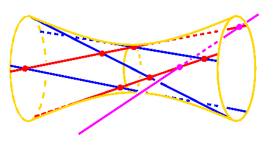
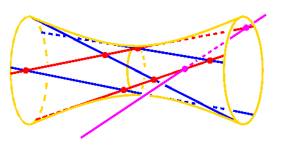

Instructor:
Frank Sottile
 Office: Van Vleck 413
Telephone: 262 - 3545
email: sottile@math.wisc.edu
WWW:
http://www.math.wisc.edu/~sottile Office: Van Vleck 413
Telephone: 262 - 3545
email: sottile@math.wisc.edu
WWW:
http://www.math.wisc.edu/~sottile

| |
Instructor:
Frank Sottile
Office: Van Vleck 413
Telephone: 262 - 3545
email: sottile@math.wisc.edu
WWW:
http://www.math.wisc.edu/~sottile
|

| |
Borel, Linear Algebraic Groups.
Humphreys, Linear Algebraic Groups.
Shafarevich, Basic Algebraic Geometry.
Fulton, Young Tableaux.
Fulton & Harris, Representation Theory.
Atiyah & Macdonald, Introduction to Commutative
Algebra.
Linear algebraic groups, which include the familiar general linear groups, as well as the symplectic and orthogonal groups, are classic mathematical objects that are important in many areas of mathematics. These areas include representation theory, finite groups, linear algebra, mathematical physics, linear systems theory, differential geometry, algebraic topology, algebraic geometry, and combinatorics.
This introductory course will develop some elementary theory of linear algebraic groups, and then use this to study the geometry of their associated flag manifolds. We will concentrate on their important Schubert subvarieties, cohomology rings of the complex flag manifolds, and also the interesting Schubert polynomials, which represent classes of Schubert varieties in these cohomology rings. Our goal will be the Schubert calculus, which describes the combinatorics and algebra of the multiplication of these Schubert classes, and ultimately intersections of Schubert varieties.
This is an area of active mathematical research, with recent contributions by members of our department, including Arun Ram. We hope to present some recent results in the Schubert calculus and discuss some open problems or possible directions for further research. The course will touch on combinatorics, representation theory, algebraic geometry, and algebra, and will also give an introduction to some interactions of these subjects in the Schubert calculus.
Minimal introduction to algebraic geometry.
Affine Algebraic Groups
Enumerative geometry and cohomology of G/P
The Grassmannian
Classical flag manifold